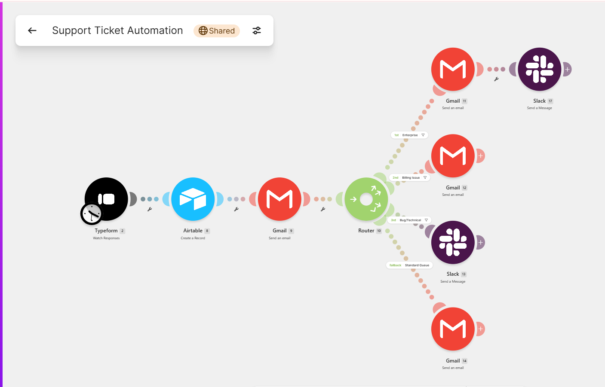
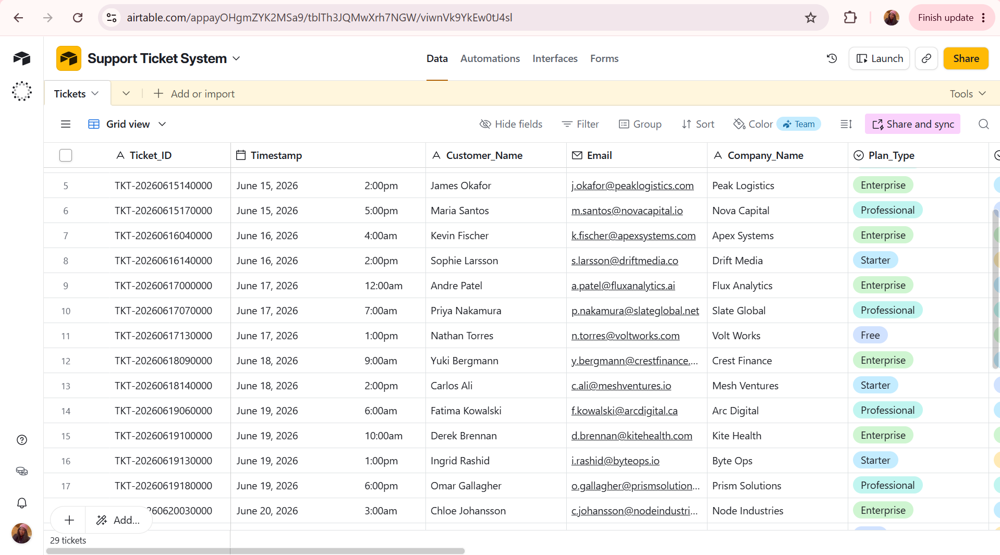

Priority-based ticket triage and routing automation — with current/future state
process mapping showing how a shared inbox becomes an intelligent escalation engine.
A growing SaaS company receives all customer support tickets via a shared Gmail inbox. Everything is manually
triaged — an enterprise client reporting a full API outage waits in the same queue as a free-tier user asking
about billing. Critical issues go unnoticed for hours, enterprise clients receive slow responses despite
paying for priority support, and there's no SLA visibility or escalation logic.
Process Mapping: Current vs Future State
The process map is the core BA deliverable here — translating operational chaos into a documented,
stakeholder-ready redesign before a single automation is built.
❌ Current State
Single shared inbox, no triage logic
Manual reading to determine priority
No routing — first available agent handles everything
Enterprise clients wait same as free tier
No SLA tracking or escalation triggers
Response time: 2 hours to 3 days, unpredictable
→
✓ Future State
Structured intake form captures priority at submission
All other tickets→Standard queue + auto-acknowledgment to customer

Make.com scenario — router with 4 priority paths
Airtable Tracking Database
Every ticket is logged automatically with a generated Ticket_ID, timestamp, SLA deadline, assigned agent, and
resolution tracking — creating an audit trail that didn't exist in the shared inbox model.

Airtable — 25 tickets with full routing and status tracking